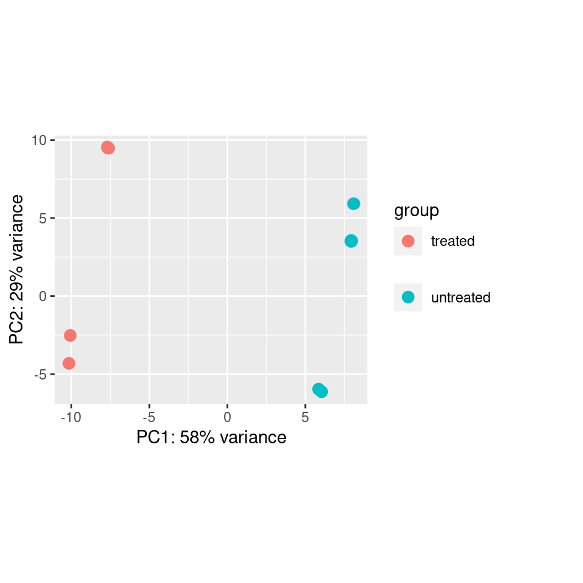
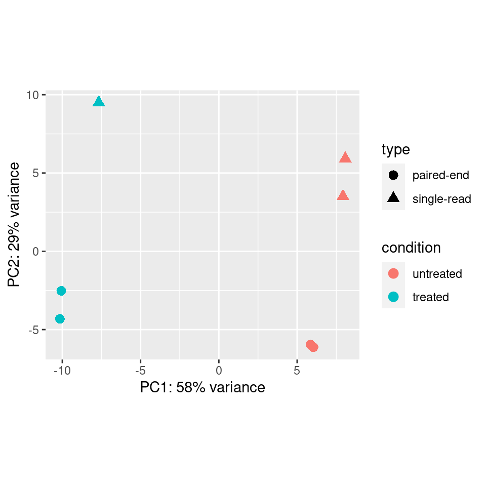
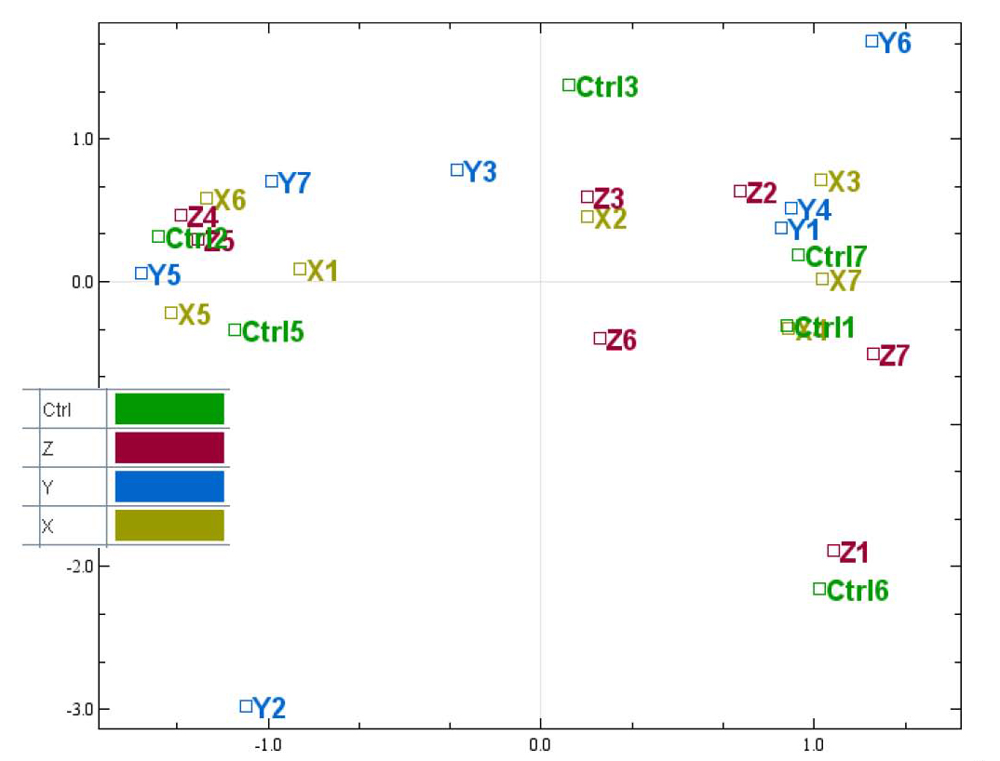
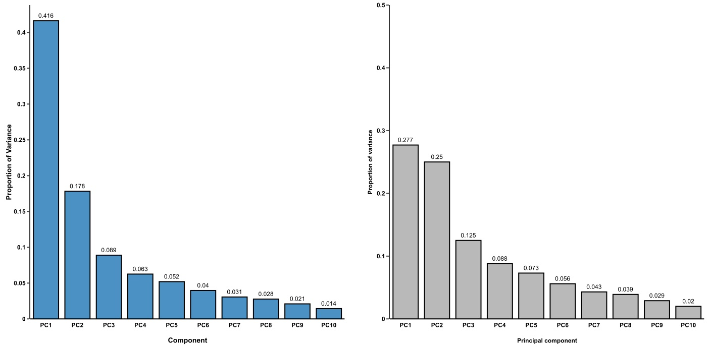

Quality Control Visualizations
We have already examined quality control assessment at the sequencing
level with FastQC and MultiQC. Now, we will
examine sample-level and gene-level quality control for our expression
data.
To do this, we will first assess the similarity of our samples by
using principal component analysis (PCA). This will allow us to
determine how well patterns in the data fit our expectations from the
experiments design and examine possible sources of variation.
Other common visualizations that we generate for our analyses include
expression heatmaps, sample correlation heatmaps, and boxplots of raw
and/or normalized counts, the code for which (due to time restrictions)
can be found as bonus content throughout the materials for today or in
the bonus content module at the end.
Principal Component Analysis
A common and very useful plot for evaluating how well our samples
cluster by treatment groups are Principal Component Analysis (PCA)
plots. PCA is used to emphasize variation and bring out patterns in
large datasets by using dimensionality reduction.
This image from a
helpful step by step explaination of PCA helps to illustrate the
principal component projections for two genes measured in approximately
60 mouse samples. Generally, this process is repeated and after each
gene’s contribution to a principal component or weight is determined,
the expression and weight are summed across genes for each sample to
calculate a value for each principal component.

This blog
post includes a helpful overview of PCA basics walks through both
the generation and interpretation of PCA plots.
A more detailed overview of the PCA procedure is outlined in a
Harvard Chan Bioinformatic Core training module and is based on a
more thorough description presented in a StatQuest’s
video. Additionally, this TowardsDataScience
blog post goes through the math behind PCAs.
Interpreting PCA plots
For most bulk RNA-seq experiments, we expect the majority of the
total variance to be explained by the first two or three principal
components. We see this in an example plot from the DESeq2
vignette:

Question
How might we interpret the variance explained by each principal
component in the context of the labeled sample points?
Evaluating batch effects or possible confounders
PCA plots are also useful for evaluating the impact of
“uninteresting” sources of variance, like library preparation or
sequencer differences. Evidence of batch effects can sometimes be quite
obvious. Let’s look at the PCA plot from the DESeq2 vigentte again but
re-colored to highlight structure in the data.

It turns out this experiment contained samples sequenced single-end
and paired-end. If we add an attribute to the plot for the sequencing
type (paired-end vs. single-end), we see that in this example PC2 (29%
of variance) is primarily explained by this technical covariate.

However, since the samples are clearly separated by experimental
condition on PC1 and there are balanced batches, if we
saw this pattern in our data we could incorporate the technical
covariate into our model design, such as outlined in the DESeq2
vignette.
Click for complex design discussion
In experiments with more complex designs, such as when there are
interesecting/multiple treatment conditions, it can be less clear what
covariants are influencing expression, such as illustrated from this
documenation for a microarray analysis tool. From the PCA labeled by
experimental treatment, we see that samples from the treatment group do
not cluster together and that there is high variance across all
treatment groups.  However, when
the plot is color coded by the technical batches of probe labeling, we
see that the patterns in the data are better explained by batch than the
experimental conditions. 
Create a PCA
We’ve already loaded the libraries we need for this module. We have
also thought ahead in the previous module and created the
outputs/figures and outputs/tables
directories.
Below, we will plot the rlog normalized data and generate the PCA
projections for the top 500 using the plotPCA function from
DESeq2, specifying condition as the condition of interest,
and view the simple plot generated by the function.
pca_plot = plotPCA(rld, intgroup = c('condition'), ntop = 500)
pca_plot

The samples don’t appear to cluster too tightly on their
condition, but we do observe that they separate in PC2.
With real data, it is often the case that data doesn’t cluster as well
as you’d expect, or that the covariate of interest is not associated
with the first (or second or third) principal component. That doesn’t
necessarily mean the experiment is a failure, but it does raise
questions such as “What is associated with PC1?” Sometimes we can’t
answer a question like this if we don’t have additional sample
phenotypes to color in the PCA.
Next, let’s save this plot as a file in our
outputs/figures folder. The “base R” way is to:
pdf(file = file.path('outputs', 'figures', 'PCA_rlog_condition.pdf'), width = 6, height = 6)
pca_plot
dev.off()
Alternatively, since pca_plot is a ggplot,
we can use ggsave().
ggsave(
filename = file.path('outputs', 'figures', 'PCA_rlog_condition.pdf'),
plot = pca_plot,
width = 6, height = 6, units = 'in')
Checkpoint: If you generated and saved the
pca_plot PCA plot, please indicate with the green ‘check’
button. Otherwise, please use the red ‘x’ button in your zoom reaction
panel and post any commands AND error messages to slack.
While the pca_plot object is a ggplot–you
can see this with class(pca_plot)– we can also assign the
underlying data generated by the plotPCA function to an
object to make plot customization easier as well as calculate the
percent variance of each component
pcaData <- plotPCA(rld, intgroup=c("condition"), returnData=TRUE)
percentVar <- round(100 * attr(pcaData, "percentVar")) # store PC axes (% variance)
head(pcaData) # see the data
PC1 PC2 group condition name
sample_A -5.842793 -9.228278 control control sample_A
sample_B 6.184870 -2.568785 control control sample_B
sample_C 5.317918 -2.683508 control control sample_C
sample_D -18.170356 5.027729 deficient deficient sample_D
sample_E 5.116193 1.010066 deficient deficient sample_E
sample_F 7.394167 8.442776 deficient deficient sample_F
str(pcaData) # check the structure
'data.frame': 6 obs. of 5 variables:
$ PC1 : num -5.84 6.18 5.32 -18.17 5.12 ...
$ PC2 : num -9.23 -2.57 -2.68 5.03 1.01 ...
$ group : Factor w/ 2 levels "control","deficient": 1 1 1 2 2 2
$ condition: Factor w/ 2 levels "control","deficient": 1 1 1 2 2 2
$ name : chr "sample_A" "sample_B" "sample_C" "sample_D" ...
- attr(*, "percentVar")= num [1:2] 0.582 0.223
With this table of PCA statistics, we can use what we learned at the
end of the Computational Foundations Workshop to customize plot as we
might see necessary.
What are some modifications we might want to make?
[use slack poll to rank]:
Examples:
- Change the overall theme of the plot
- Add an informative plot title to make interpretation/sharing
easier
- Add labels to show which samples correspond to which points
- Make our color palette color-blind friendly
- Use shape instead of color of the points to indicate groups on the
PCA plot
Customizing a PCA
Before working independently on an exercise, we’ll work together to
build a command to plot our pcaData with more familiar
ggplot2 syntax.
In this example, we’ll still use color to indicate our groups but
we’ll customize the plot to have the same black and white theme that we
used in Computational Foundations and add an informative title. Recall
that ggplot2 adds plot components in layers, and we can add
additional layers with the + sign.
# create custom plot object
PCACustom <- ggplot(pcaData, aes(PC1, PC2, color=condition)) +
geom_point(size=3) +
coord_fixed() +
theme_bw() +
labs(title = "PC1 and PC2 for iron deficient mouse samples")
# add percentVar labels to *displayed plot*
PCACustom +
xlab(paste0("PC1: ",percentVar[1],"% variance")) +
ylab(paste0("PC2: ",percentVar[2],"% variance"))

# add percentVar labels to *stored plot object*
PCACustom2 <- PCACustom +
xlab(paste0("PC1: ",percentVar[1],"% variance")) +
ylab(paste0("PC2: ",percentVar[2],"% variance"))
Now we have our PCA plotted with functions that might look more
familiar.
Independent Exercise -
Customize a PCA
(15 minutes)
Like earlier - we’ll plan to work independently in the main room.
This is a time to read function documentation, test out ideas, make
mistakes, and use a search engine to look up errors or possible example
solutions. Please post any questions or errors that arise to slack.
We’ll review possible solutions together at the end.
Try doing the following to the pca_plot, starting with
the “most popular” request and moving on to other customizations if you
have time:
- Add a title and subtitle to the plot
- Update the color palette to be color-blind friendly
- Add labels to show which samples correspond to which points
- Use shape instead of color to indicate groups on the PCA plot.
- Challenge: Change the legend title to “Iron Status”.
Link to exercise
Possible solutions to exercise prompts
Here are examples of some possible approaches:
- Add a title and subtitle to the ggplot plot
PCACustom2 +
labs(title = "Iron Supplemented Mice", subtitle = "PCA of top 500 genes")
- Add labels to show which samples correspond to which points
# display with labels
PCACustom2 +
geom_text_repel(aes(label = name),
point.padding = 0.5,
box.padding = 0.5)
- Make our color palette more color-blind friendly
# look at pre-made color palettes from RColorBrewer
display.brewer.all(colorblindFriendly = TRUE)
# use RColorBrewer palette
PCACustom2 +
scale_colour_brewer(palette = "Set2")
# OR customize using manual color palette
# The R Cookbook palette with grey:
cbPalette <- c("#999999", "#E69F00", "#56B4E9", "#009E73", "#F0E442", "#0072B2", "#D55E00", "#CC79A7")
# To use for line and point colors, add manual color scaling with custom palette
PCACustom2 +
scale_colour_manual(values=cbPalette[2:3])
- Use shape instead of color to indicate groups on the PCA plot.
# generate new aesthetic mapping (with default shapes selected)
ggplot(pcaData, aes(PC1, PC2, shape=condition)) +
geom_point(size=3) +
coord_fixed() +
theme_bw() +
xlab(paste0("PC1: ",percentVar[1],"% variance")) +
ylab(paste0("PC2: ",percentVar[2],"% variance"))
# generate new aesthetic mapping (with manually selected shapes)
ggplot(pcaData, aes(PC1, PC2, shape=condition)) +
geom_point(size=3) +
scale_shape_manual(values = c(1, 4)) +
coord_fixed() +
theme_bw() +
xlab(paste0("PC1: ",percentVar[1],"% variance")) +
ylab(paste0("PC2: ",percentVar[2],"% variance"))
- Challenge: Change the legend title to “Iron Status”
# customize label for colour mapping
PCACustom2 +
guides(colour=guide_legend(title="Iron supplementation status"))
# alternatively specify label for aesthetic mapping
PCACustom2 +
labs(colour="Iron supplementation status")
Optional content
Click for example code for generating a ScreePlot visualization of
variance across all principle components
A screeplot is a way to visualize the variance explained by all
principal components. To generate a scree plot, the PCA results need to
be used independently of plotting, such as described by this statquest
post and replicated below.
# generate PCA loadings
pcaLoadings = prcomp(t(assay(rld)), scale. = TRUE)
## get the scree information
pca.var = pcaLoadings$sdev^2
scree = pca.var/sum(pca.var)
barplot((scree[1:10]*100), main="Scree Plot", xlab="Principal Component", ylab="Percent Variation")

We can see that the majority (~65%) of the variance across our samples
is explained by the first three principal components, giving us some
additional confidence regarding the quality of our data. In these scree
plot examples from BioTuring, the plot on the left fits what we would
expect for a dataset with high signal from the experimental treatment,
where the majority of the variance is explained by the first few
principal components. The plot on the right illustrates a scenario where
the variance is distributed across many components, which could be due
to low signal from the experimental treatment, complex experimental
design, or confounding factors. image: 
